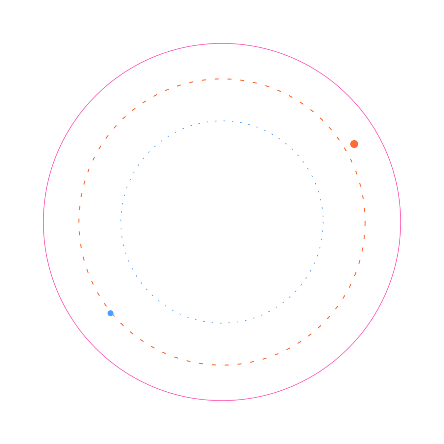

Coral resilience
Track bleaching risk and reef stress before impacts spread across critical marine habitats.

Monitor coral stress, fishing zones, and deep-water conditions through a real-time 4D view of the marine environment.
Track bleaching risk and reef stress before impacts spread across critical marine habitats.
Identify productive fishing corridors, bloom events, and habitat pressure zones in real time.
Visualize depth, temperature, and anomaly patterns to understand marine conditions faster.
What would you like to explore?
Visualize marine data in a 3D globe environment.
Select a marine location to see targeted reef and fishing recommendations.
Analyze ocean depth data with interactive charts.
Drag the probe through the water column to inspect changing conditions.
Detect and visualize anomalies in marine data.